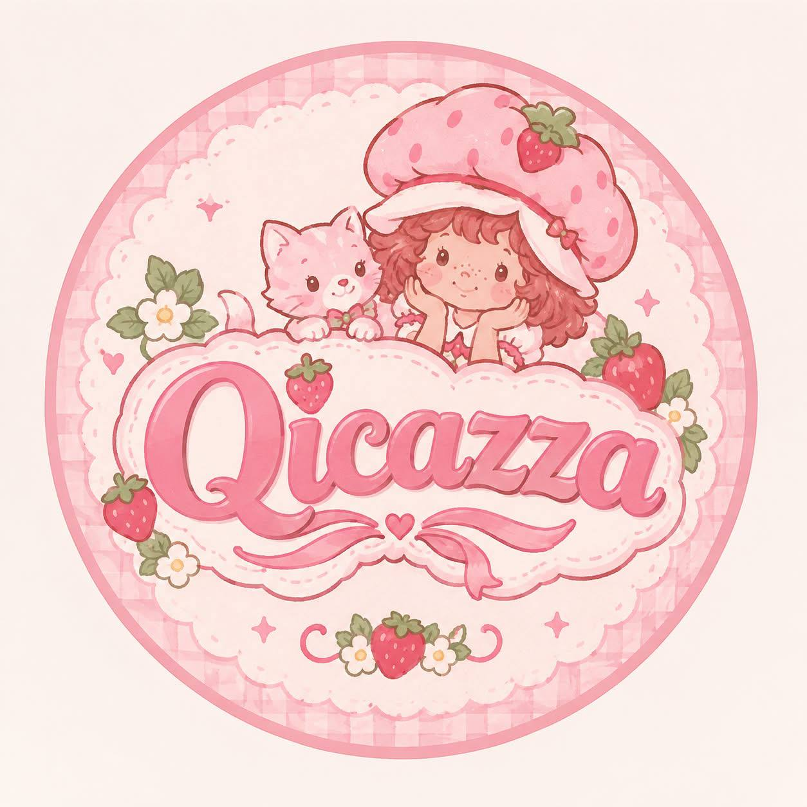

Logo kami terinspirasi dari Strawberry Shortcake Berry Bitty Adventures yang memiliki makna kesatuan, kebersamaan, dan hangat serta warna merah muda yang melambangkan manisnya hubungan pertemanan. Yang mana, itu sangat sesuai dengan produk yang kami buat yaitu Mood Journal, karena produk yang kami buat akan membuat para pengguna lebih merasakan ketenangan atau kehangatan dan memahami perasaannya sendiri ketika menggunakan website kami🙆🏻♀️
Selamat datang di ruang perkenalan tim di balik pembuatan website Mood Journal ini. Kami adalah QICAZZA Group, sebuah tim kolaboratif yang berkumpul untuk merancang platform digital interaktif yang berfokus pada kesadaran emosional dan kesehatan mental. Melalui proyek yang kami bangun di GitHub ini, kami ingin menyediakan wadah yang aman dan nyaman bagi pengguna untuk mencatat, melacak, serta memahami dinamika mood mereka sehari-hari.
Dalam proses pengembangannya, setiap anggota tim mengambil peran penting mulai dari menjadi Web Developer, Apps Programmer, Content Writer, dan Graphic Design. Proses ini menjadi sarana belajar yang sangat berharga bagi kami dalam memperkuat komunikasi, pembagian tugas, dan penyelesaian masalah secara kolektif.
Kami berharap platform Mood Journal ini tidak sekadar menjadi penyelesaian tugas proyek semata, melainkan dapat memberikan dampak positif yang nyata bagi keseharian Anda. Semoga fitur pencatatan mood ini dapat membantu pengguna lebih mengenal diri sendiri, mengelola emosi dengan lebih baik, dan menemukan keseimbangan hidup yang lebih sehat.